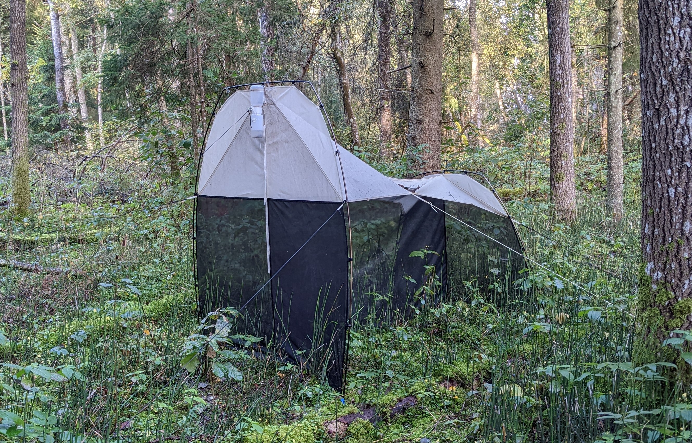

Malaise trap
Used for trapping arhtropods (mostly flying insects).
The following guidelines provide instructions for Malaise trap sampling used in the Biodiversity Genomics Europe project to identfy species in the bulk arthropod samples. Herein, Townes style Malaise traps with a white roof are used.
 Townes style Malaise trap with a white roof. Click on the image to open Malaise trap set up instructions video link [at youtube].
List of equipment
Malaise trap (including all the set-up cords and pegs)
500 mL sterile collection bottle (‘Wide-Mouth LDPE Bottles with Closure’)
95% or stronger ethanol (EtOH), not denatured (to ensure good DNA preservation)
Labels for the samples (collection bottles), and the means to fix the lable (e.g. transparent tape)
Hammer (may be needed for fixing the trap with pegs)
Device with a global positioning system (GPS)
Optional: tissues (paper-towels) to wipe the trap head from dead arthropods when chaning the collection bottle (when temporal patterns are of interest).
{kind=link}
First time set-up
Select a suitable spot (see below, ‘Placement of the Malaise trap’).
Set up the trap. See the video of how to set up a Malaise trap.
Attach the collecion bottle to the trap.
Make sure to store the bottle lid in a way it will not be contaminated (store in e.g. clean zip-lock bag).
Let the trap do its job.
Placement of the Malaise trap
Placement of the Malaise trap is important; this affects the the collection efficiency. Herein quoting Gressitt and Gressitt (1962): it should be set up where insect flight tends to be concentrated by local circumstances of topography, density or lack of vegetation, relation to wind, water and such aspects. Suitable places are across a small stream or gully, across a wide trail in the forest, at a low pass on a ridge, be tween two types of vegetation, in a clearing, plantation or savanna woodland at right angles to edge of adjoining dense rain forest, or at an opening to a clearing. The collecting head should always be in the sun (van Achterberg, 2009).
For own consideration: see Uhler et al., 2022, A comparison of different Malaise trap types for the variability in different groups of arthropods trapping efficiency between different types of Malaise traps.
Before sampling
Fill the collection bottle with 96% ethanol, ~300 ml (but may be less depending on the expected biomass of arthropods, collection time and evaporation potential); and fix the label to collection bottle (if applicable).
Collecting samples
Collect the collection bottle,
add more ethanol (if needed) to ensure all individuals are submerged, and attach the lid.
If placing a new collection bottle, then use a clean paper tissue to clean the trap head to remove dead arthropods.
The specimens in ethanol may be preserved at room temperature (but -20˚ C is advisable for long term storage).
References
Gressitt, J. L., & Gressitt, M. K. (1962). An improved Malaise trap. Pacific insects, 4(1), 87-90.
van Achterberg, K. (2009). Can Townes type Malaise traps be improved? Some recent developments. Entomologische berichten, 69(4), 129-135.
Uhler, J., Haase, P., Hoffmann, L., Hothorn, T., Schmidl, J., Stoll, S., … & Müller, J. (2022). A comparison of different Malaise trap types. Insect Conservation and Diversity, 15(6), 666-672.
BGE case studies